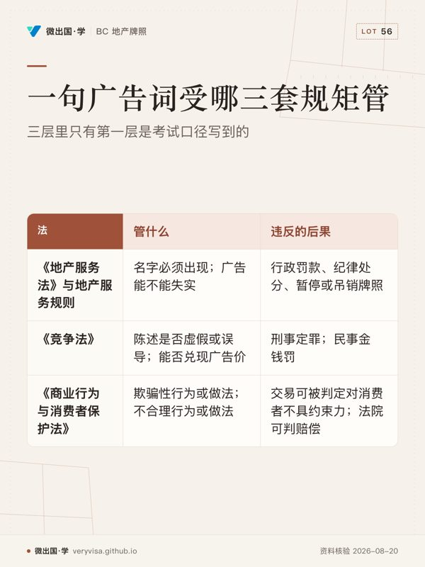

本章地位：考试口径这一章讲的是「怎么把自己和房源卖出去」——市场细分、营销组合、SMART 目标、
广告设计、上市展示。这些理论本身长青，2026 年照样成立，也照样是卷面重点。
但考试口径夹在理论中间的那一节「广告与《地产服务法》」，用的是 2020 年的条号、2013 年的罚款金额、
一个已经不存在的监管机构（Council）。本篇的任务分两半：理论按考试口径学，合规按现行法重建。
核实日期：2026-09-05，出处见文末源表。
一句话理解这一章的位置：营销的「内容怎么设计」不受牌照法管，营销的「怎么呈现自己和房源」受
三层法律同时管。 前者是考试口径的强项，后者是考试口径的弱项——它只提到了其中一层（《地产服务法》
及其规则），漏了另外两层（联邦《竞争法》与省《商业行为与消费者保护法》）。这三层各管一段、
互不替代，是本篇的核心线索。
一、制度地位：一句广告词，同时踩着三条法律的红线
本节回答This section answers 一句广告能同时踩几层法How many legal layers one advertisement can hit at once
一名持牌人写一句广告词——比如「我的房源平均 95% 卖出价成交」——同时受下面三套规矩管：
三层里只有第一层是考试口径写到的，而且写的是 2020 年那一版。第二、三层考试口径几乎没有展开——
第二层只在本章末尾一段带过，第三层考试口径通篇未提。这不是因为它们不重要，而是因为它们不是
地产牌照法的一部分：违反它们不会直接吊你的牌照，但会让你在民事或行政程序里同样被罚，
而且它们管的恰恰是「营销内容说了什么」这个营销课的核心话题。
ℹ️
为什么这一章值得跟广告条文较真
考试口径本章末尾自己引用的 BCFSA 前身（Real Estate Council of BC）通报写道：
广告违规是本行业投诉量最高的类别之一，前几名违规渠道常年是 Craigslist、Kijiji、
Facebook、Twitter（X）与 YouTube 这类零门槛发布平台——恰恰是考试口径鼓励持牌人使用的
「低成本、高触达」渠道。越是容易发布的地方，越是监管盯得最紧的地方。
二、底层逻辑：为什么营销要被这样管
本节回答This section answers 为什么要由广告方自己举证Why the advertiser must prove the claim
考试口径开篇的营销理论有一个前提：地产服务是无形产品——消费者买之前摸不到、试不了，
只能靠广告、口碑、上市展示这些「有形化」的替代品做判断。这个前提正是三层法律共同的立法理由：
- 信息不对称：卖方（持牌人）比买方（消费者）更清楚服务的真实质量，广告是弥合这个落差的
主要渠道，也正因此是最容易被滥用来夸大落差的渠道。
- 消费者不容易验证：一句「我的成交价高于市场均值」，普通消费者没有能力当场核实。
三层法律的共同做法是把举证责任压给发广告的一方——不是消费者证明你在骗人，
是你证明自己没有骗人（下节详述）。
- 持牌人之间的竞争会放大激励：在一个持牌人数量远超交易量的市场里，靠夸大宣传抢客的
激励始终存在，制度设计因此不能只靠自律，需要外部处罚兜底。
三层分工的逻辑：《地产服务规则》管「谁在说话、说话人是谁」这个身份识别问题；
《竞争法》管「说的话是不是假的」这个国家级市场诚信问题；BPCPA 管「消费者有没有被这句话
实际误导或占便宜」这个省级消费者保护问题。一句广告词可以同时触犯三层，
但也可能只踩中其中一层——不写经纪行名字，踩的是第一层，与广告内容真假无关。
三、考试口径（©2020）说的 vs 2026 现行
本节回答This section answers 卷面把团队名批给谁Which body the exam sheet says approves a team name 本章考题 5Question 5
⚠️
第 4 行最容易被误读
「考试口径没写错」不等于「考试口径写全了」。s.52、s.74.01、s.74.05 这三条今天仍然有效，
直接照抄考试口径这三条不会出错。但 s.74.01 在考试口径定稿后加了一整段环保声称的新内容，
考试口径没写，不代表这条不适用于你——它照样管你在广告里说的每一句「node-zero ready」
「eco-friendly」「节能」。判断「考试口径有没有过时」要一句一句判，不能一条一条条号判。
四、市场理论：这部分考试口径长青，直接学
本节回答This section answers 购前做完多久会选定人How soon after pre-purchase activity the person is chosen 本章考题 1Question 1 本章考题 2Question 2 本章考题 3Question 3 本章考题 4Question 4
4.1 三个基本需求与目标市场
考试口径的起点是营销概念（marketing concept）：一切营销活动的落点是获得新客户、
留住老客户、拿到转介。买卖双方向持牌人求助，本质上是为了满足三个基本需求：
- 信息（Information）：市场行情、流程、文书、涉及各方的角色；
- 知识与技能（Knowledge and Skills）：买卖双方自己不具备的专业操作能力；
- 信任与保密（Trust and Confidentiality）：这一条在地产行业尤其重要，因为客户会
透露财务状况、出售动机这类敏感信息，而这条需求恰好也是规则第 30 条保密义务在
营销语境下的另一种表述——考试口径这里讲的是心理学，落到执业层面就是法律义务，两者说的是同一件事。
一个持牌人不可能满足所有细分市场的所有需求，所以要选目标市场（target market）：
按物业类型（公寓/联排/独立屋）、地域（区域/城镇/社区）、消费者类型（家庭/豪宅买家/机构投资者）
细分，再挑一个能发挥专长、竞争可控、有利润空间的细分市场深耕。
4.2 两个买家行为模型
购物行为模型（Shopping Behaviour Model）把商品/服务按消费者愿意付出的挑选成本分四类：
购买行为过程模型（Process Model of Buying Behaviour）把购买拆成四个阶段：
- 触发需求（Felt Need）：家庭结构变化、工作调动、利率上升、租金上涨、房产升值等外部事件；
- 购前活动（Pre-Purchase Activity）：读资料、看开放日、和朋友聊、浏览持牌人网站、面试持牌人；
- 购买活动（Purchase Activity）：谈判并签署委托协议——研究显示，消费者通常在完成购前活动
一周内就决定选用哪位持牌人；
- 购后活动（Post-Purchase Activity）：可能出现认知失调（cognitive dissonance），
俗称「买家的忧郁」——「是不是该定更高的价」「是不是该找别的持牌人」这类自我怀疑，
在签约、接受附条件要约、解除条件、实际搬家等多个节点都可能反复出现。
🔧
认知失调不是签约那一刻才会出现
很多新人以为签完委托协议就算「拿下客户」，认知失调是签约后一次性风险。
实际上它在整个交易过程里反复发作：接受要约时、解除条件时、搬家前都可能再犯。
持续沟通比一次性说服更重要——这也是考试口径反复强调「listening skills 与 empathy」
的原因所在。
4.3 营销组合（4P）与产品定位
营销组合（marketing mix）＝产品（Product）、地点（Place）、价格（Price）、促销（Promotion）：
- 产品：地产服务是无形的，无法试用、无法比对样品，卖的是持牌人的经验、知识、谈判与沟通能力；
- 地点：不只是经纪行办公室——持牌人的「地点」也包括网站、邮箱、以及愿意亲自跑动去接触客户
的移动能力；
- 价格：考试口径列了多种常见定价法（价值定价、声望定价、成本加成、加价率定价、渗透定价、
撇脂定价、跟随竞争、分层定价、促销定价）——这里的「价格」指服务收费，不是房屋成交价；
- 促销：五种促销活动的组合（人员推销、广告、销售推广、公共关系、宣传），下节展开。
产品定位（product positioning）回答的是「消费者心里怎么看你」；差异化策略分三种：
无差异营销（一套方案打全市场）、差异化营销（多套方案对应多个细分市场）、
利基营销（niche marketing）——考试口径特别提醒：个人持牌人资源有限，贪多嚼不烂，
盲目跨界（例如住宅持牌人临时接手商业物业）不仅营销效果差，还可能构成违反胜任力义务
（考试口径原话：failure to devote adequate time/expertise 可能构成「a breach of professional ethics」）。
4.4 SMART 目标与促销组合
SMART＝具体（Specific）、可衡量（Measurable）、可达成（Achievable）、相关（Relevant）、
有时限（Timely）。考试口径给的对照例子是：「多拿些新盘」不是 SMART 目标；
「未来 6 个月内，针对 100 户直邮，从中拿到 15 个新盘」才是。
促销组合（promotional mix）五个元素，考试爱考它们的区分点：
⚠️
广告 vs 宣传，最容易混的一对
两者最大的区别不是「谁写的」，是要不要付钱与能不能控制内容。
你付钱登的报纸整版是广告；本地报纸主动采访你、写你对市场走势的看法，那是宣传。
宣传的可信度往往比广告高（因为读者认为报道不是「你花钱买的」），
但代价是你无法保证报道的角度和结论对你有利。
五、广告：三层法域的具体落点
本节回答This section answers 修图怎样才不算改房子Which photo edit does not change the house
 图：市场营销导论——广告自由，但受三层法域管
图：市场营销导论——广告自由，但受三层法域管
5.1 第一层：地产服务规则的身份识别义务
这一层考试口径写到了（虽然条号是旧的），核心要求见第三节表格第 1、2、3 行。
落到营销实务上，最容易踩雷的三处是：
- 经纪行名要用登记全称：短称、只有 logo、只有品牌名都不满足第 40 条第 2 款
「显著且易读」的要求。BCFSA 现行的广告核查清单举例：某经纪行全称是「ABC Hillside Realty
Ltd.」，只写「ABC Realty」或「Hillside Realty」都不够，必须是完整登记名。
- 社交媒体只需资料页署名，不需要每条帖子都写：这是 BCFSA 给的对持牌人友好的口径，
前提是资料页确实写了。
- 团队命名有用词限制：BCFSA 现行审批口径要求团队名必须让公众看出「这是同一经纪行的
一群人在合作」，可用「Team」「Group」「Network」「Associates」这类词；
「Realty」「Real Estate」原则上不能用在团队名里（会让人误以为是独立注册的经纪行），
唯一的例外是把它们放在结尾当后缀，例如「XX Real Estate Team」「XX Real Estate Group」
这种写法可以。团队名审批周期通常是 BCFSA 收到申请表后一周到十天。
✕
中文团队名同样受这条词汇限制
「XX 地产团队」直译回英文若落进被禁止的模式（听起来像独立注册公司），照样会被 BCFSA 打回。
命名前建议先看现行审批口径里允许与不允许的用词清单，而不是凭直觉翻译。
5.2 广告内容真实性：五类容易翻车的表述
BCFSA 现行广告指引把「保持真实准确」拆成五类：
- 信息保持现行：挂牌到期立即下架，物业信息变化要跟着改；
- 保护客户信息：未经许可不得把卖方出售动机或心理底价写进广告——这是规则保密义务
在广告场景下的具体化，取得客户书面许可是唯一的免责方式；
- 承诺或优惠：任何条件与限制必须清楚写出，完整书面条款须可供索取；
- 比较性宣称、业务量、荣誉或奖项：必须写出依据——来源、日期、资格条件；
- 修图界线：修掉垃圾桶、修掉车道上的车可以；修掉电线或改变物业实体特征不可以。
第 4 类和第 2 类，正是本章考试口径「上市展示（listing presentation）」一节教你去写的东西——
考试口径举例的展示话术是「我的房源平均在挂牌 45 天内成交，而本区平均是 65 天」
「我的房源平均以挂牌价的 98% 成交，本区平均是 92%」「回访调查中 100% 的客户表示会推荐我」。
这些话术本身没有问题，问题在于：写出来的每一个数字，都必须能拿出依据。
✕
上市展示里的统计数字，和广告受一样的规矩管
考试口径把「showcasing strengths」当成打动卖家的话术技巧来教，但只字未提这些数字
同样落在「比较性宣称」的合规义务下。真实场景：假设一位持牌人在展示材料里写
「我的房源平均以挂牌价的 95% 成交」，却拿不出具体的成交清单和计算口径支撑这句话，
一旦被投诉，这不是「话术夸张」的问题，是「无依据的比较性宣称」的合规问题——
BCFSA 的处理口径和对待一句普通广告词完全一样：必须能拿出来源、日期与统计口径。
5.3 第二层：BPCPA——地产广告里的「欺骗性行为」
BPCPA 第 2 条第 2 款把这部法的适用范围切成两半：一般消费合同保护（合同必须写什么、
消费者能不能取消合同这类）不适用于土地的出售、租赁、按揭或押记；但第 2 部
（不公平行为，Unfair Practices）与第 5 部（信贷成本披露）明文保留适用。
第 2 部第 1 分部把「欺骗性行为或做法（deceptive act or practice）」定义得很宽：
供应商对消费者的口头、书面、视觉、描述性或其他表述，只要有「欺骗或误导消费者的能力、
倾向或效果」，就算——不要求实际有人被骗，只要有这个可能性就够。第 5 条把举证责任
压给供应商：一旦被指控，由你证明自己没有欺骗，不是消费者证明你骗了他。
「消费者交易」的定义包含「供应商向消费者提供服务或不动产」，地产服务与地产销售
都落在这个定义里；「供应商」的定义也明确包含「就该交易进行招揽、要约、广告或推广」的人
——这意味着，发布地产广告的持牌人，本身就是 BPCPA 意义上的「供应商」。
这一层和地产服务规则第 41 条（虚假广告）说的是近似的事，但走的是完全不同的执法路径：
规则第 41 条由 BCFSA 处理，落点是牌照；BPCPA 由 Consumer Protection BC 处理，
落点是这笔交易对消费者是否具有约束力、以及消费者能否另循法院途径索赔。
两条路径可以同时启动，互不排斥。
ℹ️
为什么考试口径整章不提 BPCPA
一个合理的猜测：考试口径编者把「消费者保护」默认理解成「消费合同保护」（能不能取消合同、
冷静期这些），而 BPCPA 的这部分恰好不适用于土地交易，编者可能因此判断整部法都不相关。
这个判断只对了一半——第 2 部的欺骗性行为条款是例外中的例外，专门被保留下来管广告与
销售话术，不受土地交易那条排除条款约束。
5.4 第三层：竞争法——从虚假广告到「滴价」再到「洗绿」
考试口径末尾提到的两条现行仍然有效：
- s.52：明知或罔顾地向公众作出虚假或误导性陈述，属刑事罪；
- s.74.01：同一件事的民事版本，走行政程序，不需要证明真有人被骗；
- s.74.05：以高于广告价的价格出售或出租，本身就构成可审查行为（有限的例外，如广告后
紧跟更正声明）。
考试口径没写到、且是后来才加进去的两处：
- 滴价（drip pricing）条款（s.52(1.3)）：因固定强制性费用而无法实现的价格陈述，
本身就构成虚假或误导——这条更常见于交易佣金结构的讨论（本课「地产合同」篇已详述），
营销场景下的对应问题是：广告里出现的任何「起价」「低至」类价格宣传，
若消费者实际支付时会被固定强制费用拉高到无法达到广告价，同样落进这条；
- 环保声称条款（s.74.01(1)(b.1)(b.2)，2024 年新增、2026 年再修订）：宣传产品或业务活动
有利于「保护或恢复环境」「缓解气候变化的环境、社会或生态影响」，若缺乏充分适当的证据，
同样构成虚假或误导陈述，举证责任在做宣传的一方。
这一条直接命中地产营销的一个新兴话术区：越来越多广告用「节能」「环保认证」「net-zero
ready」「绿色建筑」这类词汇打动买家。这句话不是不能说，是说了就要能拿出依据——
比如具体的能效评级报告、认证机构名称与认证日期，而不是持牌人自己的主观判断。
⚠️
「考试口径没提的条款」不等于「新出现的问题」
环保营销话术在 2020 年就已经存在，只是当年联邦法律还没有专门条款去管它。
法律滞后于市场现象是常态——考试口径写作时这类营销手法已经流行，但规管它的条文
到 2024 年才补上。判断一条规则新不新，不能只看营销手法本身新不新。
六、上市营销计划与商标：链接到相邻篇章的部分
本节回答This section answers 自制广告能不能用简称Whether a self-made advertisement may use a short name
本章考试口径关于上市展示（listing presentation）的写作结构（个人介绍、团队介绍、经纪行介绍、
既往业绩、CMA 比较市场分析、突出优势、客户证词、附加文件）本身是长青的实务技能，
第五节已经讲清楚其中最容易触发合规问题的「突出优势」统计数字应当怎么核实依据。
证词（testimonial）的合规要点与「比较性宣称」同源：证词内容必须真实可核实，
不能代客户杜撰措辞；如果证词里出现具体数字（例如「省了两周成交」），同样要能拿出依据。
个人地产公司（PREC）广告名称的一般规则是不得使用「PREC」缩写、必须使用全称——
但现行有一处系统性例外：像 MLS® 这类由数据库自动生成广告内容（feature sheet、
房源信息页）的场景，若数据库字段长度容纳不下持牌人 PREC 的全称，系统会自动生成
「姓名 PREC」并在页面下方加脚注注明「PREC 代表个人地产公司」。这条例外只适用于
系统自动生成的场景，持牌人自己制作的广告仍必须写全称，不能自己也用这个缩写。*
REALTOR®、MLS® 商标的归属与使用限制、以及团队向总监注册的完整流程与四条硬约束，
本课「职业伦理」篇（ch09）与「科技与持牌人」篇（ch26）已经详细展开，本篇不重复——
两条要点是：不是每个持牌人都是 REALTOR®（只有 CREA 会员才是），MLS® 标记不能用作商号。
电话营销与全国拒接来电名单（DNCL）的窗口长度与豁免范围，本课「科技与持牌人」篇（ch26）
第六节同样没有读到 CRTC 原文，只留下制度层结论（电话与电子讯息是两套规矩、
窗口长度不同），没有给出具体数字。本篇同样遵守这条纪律，不重新猜测数字。
七、柜台上怎么做
本节回答This section answers 底价和动机能不能写进广告Whether the lowest price and the motive may go into an advertisement
- 每次发广告前，先过一遍五问：经纪行全称写清楚了吗？地址是经纪行地址吗？
团队名批准过吗？带数字的宣称能拿出依据吗？照片改过的话，改动是不是「本来就不属于
这处物业的东西」？
- 上市展示材料里的每一个统计数字，单独建一份依据文件：数据来源、统计口径、
截止日期，与展示材料一起存档，不是「大概记得」。
- 客户的出售动机、心理底价，默认不写进任何广告。真要写，先拿书面许可，
并建议客户签字确认整份广告内容。
- 团队命名先看当前审批口径的用词清单，别自己直译中文团队名；BCFSA 通常在收到申请后一周到十天内答复，
提前规划。
- 「节能」「环保」类营销词汇配一份可核实的依据（能效证书、认证机构、日期），
不写「据了解」「应该是」这类无法举证的表述。
- PREC 持牌人自制的广告一律写全称，不要因为见过 MLS® 页面上的缩写就以为自己也能用。
- 一句广告词被投诉后，可能同时面对 BCFSA、Consumer Protection BC 与联邦竞争局三个方向
的问询——发布前的自我核查成本，永远比事后同时应对三条程序低。
八、三个情景
本节回答This section answers 没有依据的环保说法算不算Whether an environmental claim with no basis still counts
情景一 · 「95% 挂牌价成交」的展示材料。
持牌人林先生在上市展示材料里写「我的房源平均以挂牌价的 95% 成交，本区平均是 90%」，
用来说服卖家选用自己。这句话本身可以写，但林先生必须能拿出这两个百分比各自的计算口径：
统计的时间段、纳入统计的房源清单、数据来源。如果被投诉且拿不出依据，
这不是「话术夸张」层面的问题，而是规则第 41 条的虚假误导广告与BPCPA 第 4 条
「有欺骗能力或倾向的表述」同时可能成立的问题——两条路径可以同时启动。
正确动作：展示材料附一页数据来源说明，注明统计区间与口径，并保留原始记录备查。
情景二 · 「帮你打赢竞价战」的广告语。
持牌人赵女士在社交媒体上发广告：「找我，保证帮你在竞价战中获胜」。
问题在哪：多重要约的结果取决于卖方的最终决定与其他买家的出价，
持牌人无法单方面「保证」结果。这句话构成对服务效果的不实承诺，
落入竞争法 s.74.01(1)(a)（对公众作虚假或误导陈述）的射程；如果这句话进一步暗示
「我们能看到所有对手的出价」（而现实中卖方是否披露其他要约内容，取决于卖方自己的选择，
不是持牌人能单方面保证的事），还可能构成对交易机制本身的误导性描述。
正确动作：把营销语言改成过程性描述（例如「我会帮你制定有竞争力的出价策略」），
不对不可控的结果做保证。
情景三 · 「Net-Zero Ready」的挂牌广告。
持牌人陈先生在挂牌广告里写「这套房子 Net-Zero Ready，符合最新节能标准」，
依据只是他自己「觉得这套房子看起来很新、保温做得不错」。
问题在哪：这句环保声称落入竞争法 s.74.01(1)(b.1)——对产品（这套房子）有利于环境或缓解气候变化影响
的表述，若不是基于「充分适当的测试」（adequate and proper test），本身就构成虚假或误导，举证责任在陈先生这一方。
（(b.2) 是另一款：宣传业务或业务活动的环保效益须有充分适当的证据支持；房子是产品，不走那一款。）
正确动作：只有在拿到具体的能效评估报告、认证机构名称与评估日期后，才能使用这类表述，
并在广告里注明依据来源；拿不到就改用「近期更新保温层」这类可验证的具体描述，
不使用「Net-Zero Ready」这种需要专业认证支撑的措辞。
术语双语对照
源表（本篇判据）
本篇有意没给的数字（没读到官方原文，以官方现行页为准）：全国拒接来电名单（DNCL）具体窗口月数与洗号周期——
以 CRTC 现行规则页为准；
BPCPA 第 164、165 条行政罚款的具体金额上限——本篇只引用了不公平行为的定义与举证责任条款，
未逐条核实罚则金额，故不写入具体数字；地产局（非 BCFSA）层面对广告违规的会籍处分与
罚款标准——各地产局章程不同，无统一一手源。
本页知识卡
不看正文也能拿到这一节的核心内容：先看导读，再看图。点图放大，左右翻页。
放大 ⤢条文、团队地位与罚款结构都已改变。- 先看先看罚款一行，金额结构变化最容易形成判断。
- 易漏别只盯条号：团队从命名审批升格为独立分部，监管主体也换了。
- 下一步去讲义核对依据与生效日，再把旧说法带进模考检验。
详情与分享 →
放大 ⤢同一句广告词可同时受三套规矩约束。- 先看先横着看三行：同一营销内容会落入不同监管范围。
- 易漏后两层不是地产牌照法的一部分，但仍可能进入民事或行政程序。
- 下一步去练习把一条广告分别归到执业、竞争和消费者保护问题。
详情与分享 →
本站依据官方原文自撰 · 出处见正文链接